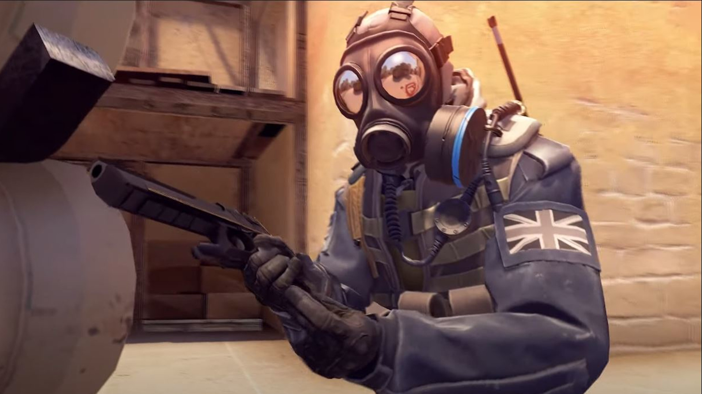
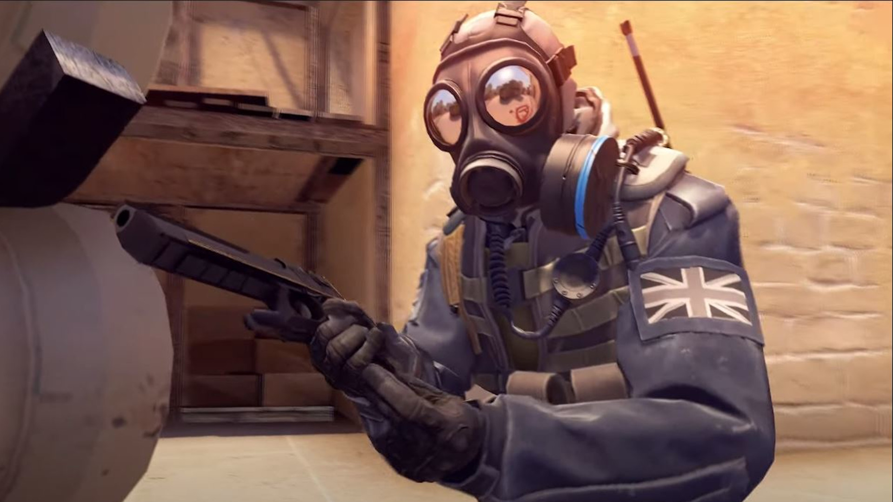
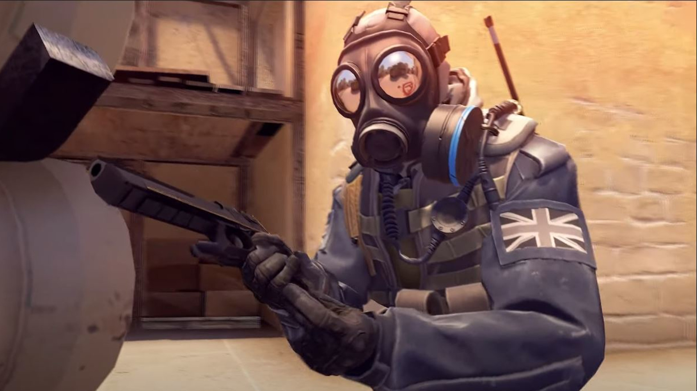

Szeretem a játékot mert szórakozást és izgalmat nyújt számomra.
Általában barátokkal játszunk úgynevezett MM meccseket, ahol rangot szerezhetünk.
6 éve játszom a játékkal és még a mai napig izgalmas tud lenni.
Maga a játék 2012-ben jelent meg és nagy népszerűségnek örvendett. A játék két csapatból áll: Terroristák és Terrorelhárítók. A Terrorelhárítóknak meg kell akadályozniuk a Terroristákat, a bomba telepítése elöl. A bomba telepítése esetén 40 másodperc van a bomba hatástalanítására. Amennyiben nem sikerült hatástalanítani, a bomba felrobban és a Terroristák nyernek. Amennyiben a bomba hatástalanításra kerül, úgy a Terrorelhárítók nyernek.

A játékot a Steam oldalán lehet megvásárolni vagy kipróbálni.
Bemutató (trailer,demo) videó: